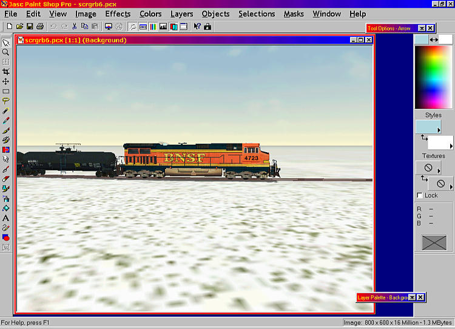

Start MSTS and select your locomotive, preferably light engine. For the purposes of this tutorial, I've decided to use the default BNSF Dash-9. I usually select Winter/Clear as my weather option: the heavy snow option means that the ground cover is a more even white which makes it easier to add text and removes distractions from your model (I created the screen shots for this tutorial on a computer that doesn't have "heavy snow" installed, so I used the sky for a backdrop for placing text - read on, it becomes clearer).
Using a variety of camera angles and locations, press "Print Screen" often to accumulate a variety of screen shots. Once you feel you have a good selection of screen shots, quit MSTS.
The screen shots you've taken can be found in the Train Simulator folder: they are entitled scrgrb0.pcx, scrgrb1.pcx, scrgrb2.pcx and so on in sequential order. See image below.
Open Paintshop Pro.
File | Open Browse to Train Simulator folder. Using the "Preview" image, look for an image that's got clear open space either above or below the locomotive. This is where you'll be able to add text later.
Note that I've selected scrgrb6.pcx.
Click ok and the image opens.

The first step we will take will be to crop the image. Click on the Crop button (third button down on the left hand toolbar) - it's arrowed in the image below..........

The cursor changes to a crosshair. Click and drag out a rectangle measuring 462x320 pixels. It doesn't matter where you create the rectangle - it's the size that's critical. You can monitor the size of the rectangle as you drag the cursor by watching the figures in brackets in the lower left hand side of the window (enlarged in the image below).
When you let go of the mouse button, the cursor immediately changes to a four headed arrow. Now you can move the crop box around the screen until you are happy with the position of the crop box.
Double-click on the crop box to select it. You're now left with a 462x320 pixel image.
Now add text to this image.
First move the image to the top left hand corner. Click on the text button marked "A" on the left hand toolbar and the text dialogue box appears as shown below. Select your font, colour, size and type your text. Clicking on the eye at the lower right of the dialogue box inserts the text on the image, allowing you to proof the text.
When you're finished, click "OK" to complete Text Entry. The letters are shimmering. Ignore.
Once you've finished and are satisfied with the result, it's time to save your work.
Press File | Save As
Select the Dash 9 folder.
Select Save as type: "Windows or OS/2 Bitmap (*.bmp)"
Give the file a name, say "myloco".
Click on Save. The following message will pop up.
Click on "Yes".
Go into Explorer, browse to the "Dash9" folder and rename loco.ace to default_loco.ace.
Open TGATools. Click on File | Load. The dialogue box below appears.
Select "BMP Image" in Files of Type.
Select "myloco".
TGATools loads myloco.ace.
In the drop-down box at right, select "Patch #1 MakeAce".
Check "Compress ACE Files"
DO NOT check "Use DXT Compression"
Click Export | Ace (no Alpha). Dialogue box as below appears.
Type in "loco.ace" for the filename.
Click on "Save".
That's it...... you're done!